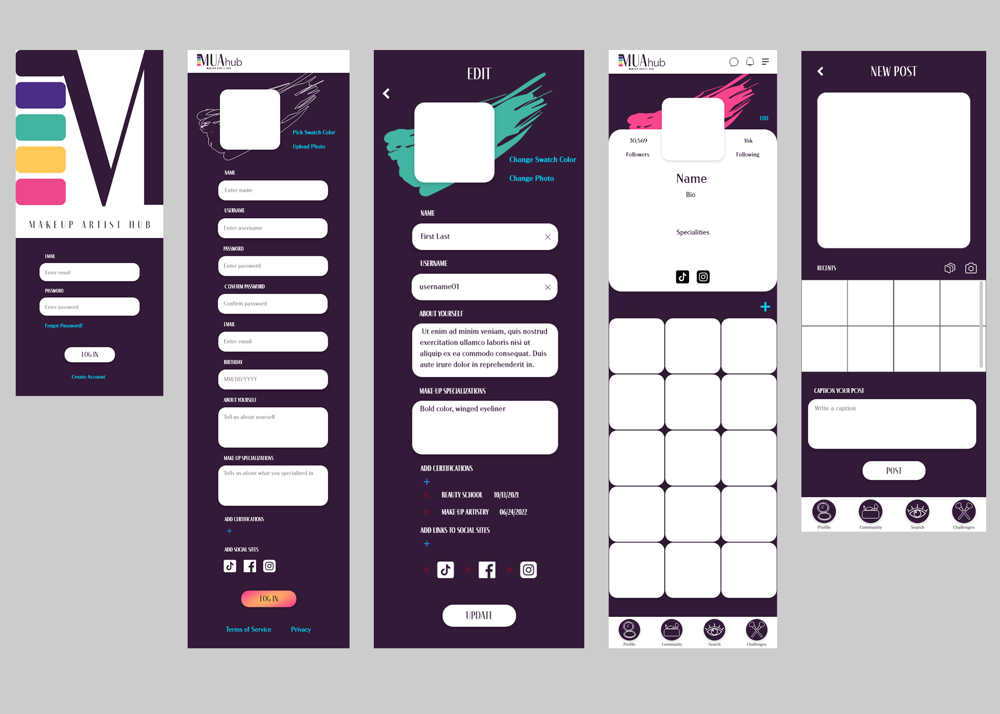
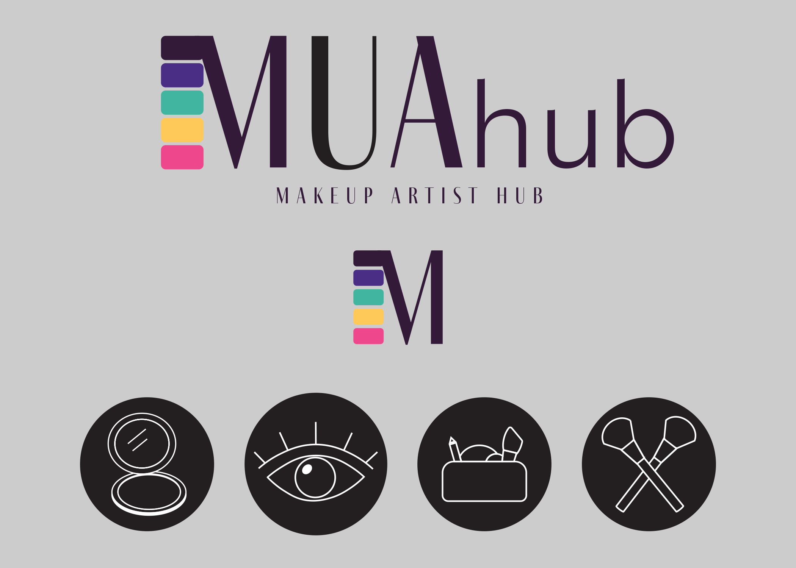
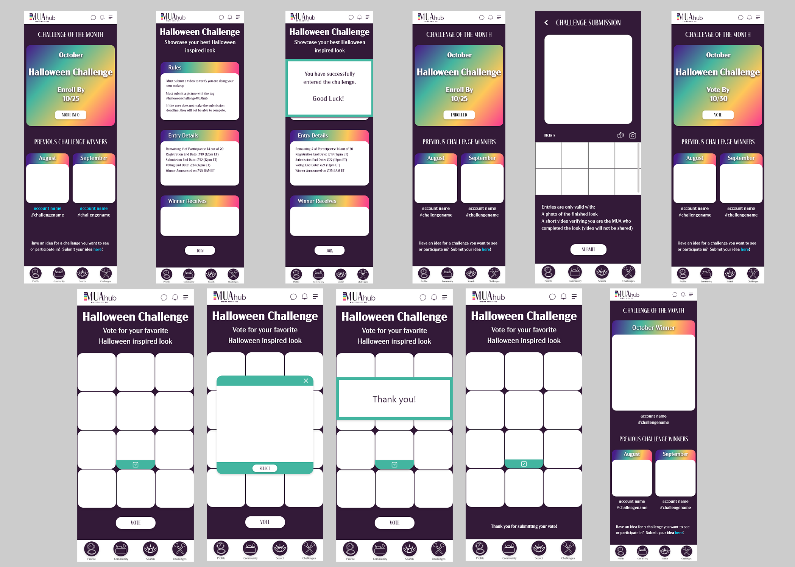
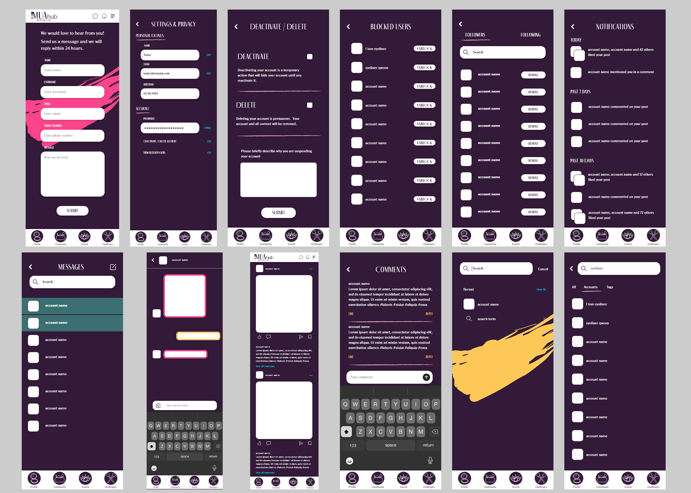

MUAhub
Social App for Makeup Artists

Social App for Makeup Artists
This was a passion project my friend asked me to design for.
This app was created with MUAs (makeup artists) and make-up enthusiasts in mind. We wanted to have a dedicated app for all things make-up that functioned like other social sites allowing posting, commenting and sharing.
There was also an added feature where users could participate in a make-up challenge and vote for their favorite submission.

I hadn’t designed a logo in a long time, but I came up with this idea quickly and was able to translate it exactly as I had envisioned.
Our color palette is imagined as eyeshadow pans to create the side of the "M".
I also created icons that matched our make-up theme. The icons went through a few iterations until I found the appropriate balance of detail and legibility.
A compact was used for "profile", an eye for "search", a make-up bag for "community" and crossed make-up brushes for "challenges".
The icons are at the bottom of all in app pages, once your user account is created, to serve as navigation throughout the app.

The most toilsome aspect of this design was the challenges page and how to properly lay it out to allow users to submit their entries and also to vote for which submission they liked best.
There were alot of questions to be answered from both the submitting user and voting user use cases.
For users entering the challenge:
For users who were voting on submissions:

A lot of research focused on social media apps. We weren’t reinventing the wheel, just allowing for a more niche space that was familiar to use.
As someone who has always loved makeup, it was fun to incorporate small touches to really drive home the theme of the app:
This project halted at the development phase, but hopefully it will be revisited in the future.
